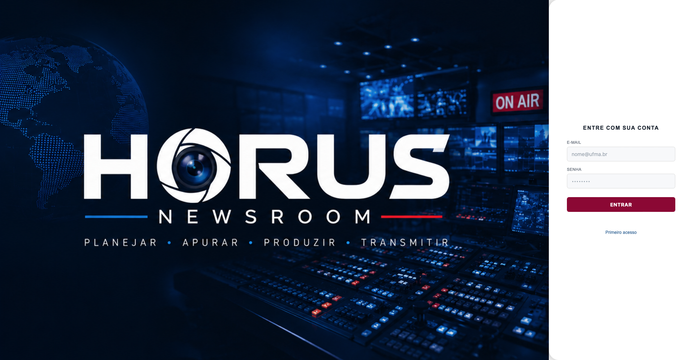

GERENCIAMENTO DE PAUTA E PRODUÇÃO
Um sistema pensado para a rotina de comunicação.
O HORUS é um sistema de gerenciamento de pauta e produção desenvolvido para empresas de televisão, rádio, revistas e jornais.
A proposta é centralizar informações e organizar etapas do fluxo de produção, oferecendo uma visão mais estruturada das atividades e das demandas editoriais.